爽爽複製自己的門禁磁扣
要準備的東西
- 電腦一台(mac、windows或是linux都可以，我會拿mac來演示)
- 在蝦皮或是露天上面購買能夠改寫UID的磁扣或是卡片，這種磁扣又稱為水卡(第0區塊能夠自由讀寫) 平均一個磁扣的價格大約落在9~13元的新台幣
- Arduino Uno板一個(網路上買會比較便宜，大概300有找。不一定要原廠的arduino UNO，原廠的超級貴)
- RC522模組一個(需要先將腳位焊接好，網路上大概是賣100元上下)
- USB-B to USB-A 傳輸線一條
- 公對母跳線(杜邦線)數條若是只有公對公的跳線則還需要麵包板
跟我一起動手做
- 首先要去下載 Arduino IDE，這是一個支援Arduino所有開發板開發環境的一個軟體
- 將Arduino Uno 與 RC522 按照下列指示用跳線接再一起，
再使用USB-B to USB-A 傳輸線將Uno板接上電腦，你可以透過 Random Nerd Tutorials
得到更多的資訊
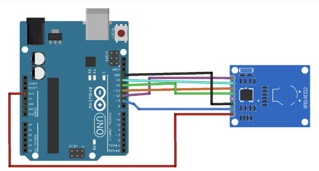
RC522接腳 Arduino接腳 SDA Digital 10 SCK Digital 13 MOSI Digital 11 MISO Digital 12 IRQ 不連線 GND GND RST Digital 9 3.3V 3.3V - 因為Arduino已經有控制RC522的程式範本了，我們可以直接下載RC522的library 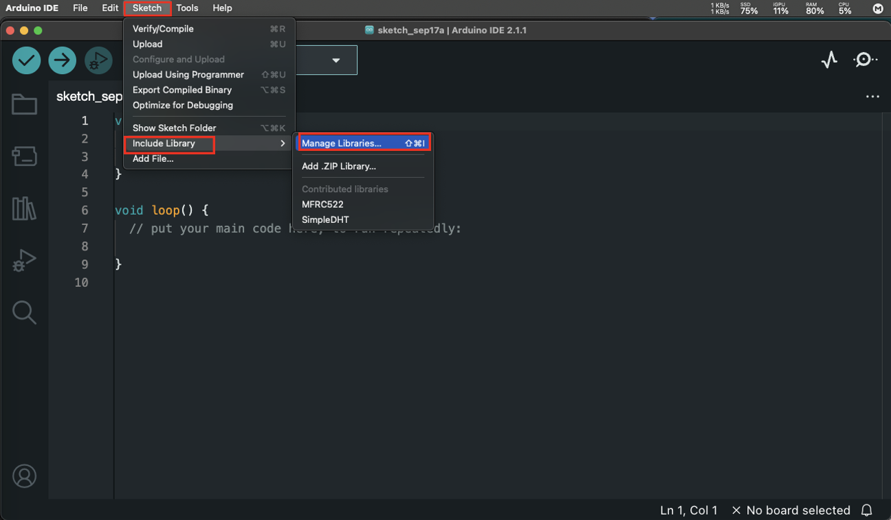 步驟一：點開sketch選單，在include Library中找到 Manage Library 並點擊 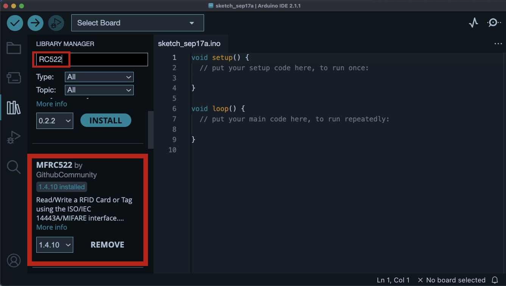 步驟二：再搜尋欄位中尋找“RC522”後，再搜尋結果找到“MFRC522”並且點擊下載， 因為我已經有下載了所以我顯示的是“REMOVE”。此時，Library就已經下載成功了。
- 我們必須要再次確認我們的Uno開發板已經讓電腦連上對的埠號 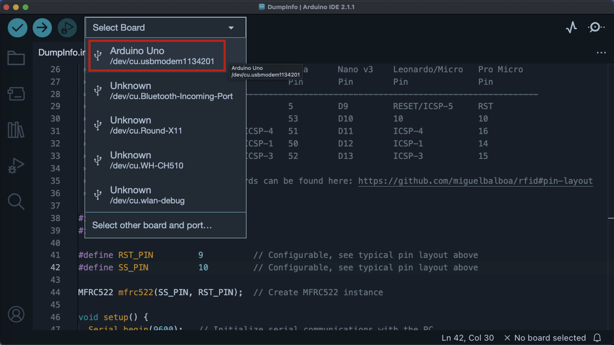
- 我們有一張學生證，因為門禁系統有這張學生證的UID， 因此這張學生證能夠進出宿舍。也就是說我將一張能夠更改UID的磁扣改成這張學生證的UID， 我就能利用這張磁扣進出宿舍了，因為門禁系統能夠與這個UID資料匹配。 現在我們要來查看這張學生證的UID，並且將這4組16進位的數字記下來 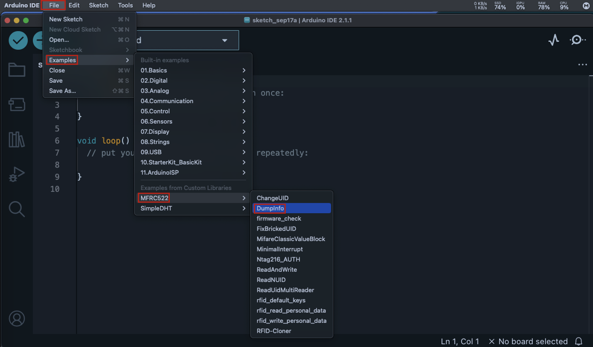 步驟一：依照上圖找到Dumpinfo 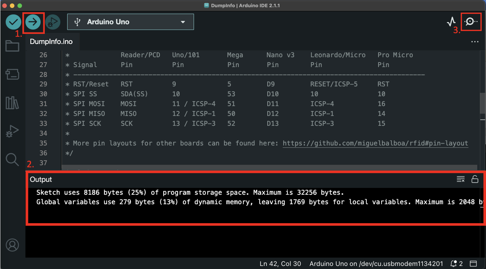 步驟二： *1.點擊上傳按鈕，將範例程式上傳到開發板上 *2.等待程式碼編譯，若output沒有出現紅色字體的字就表示程式碼是沒有問題的 *3.點擊serial monitor 觀察與開發板的互動 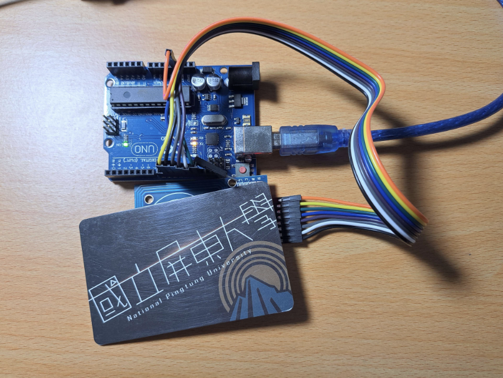 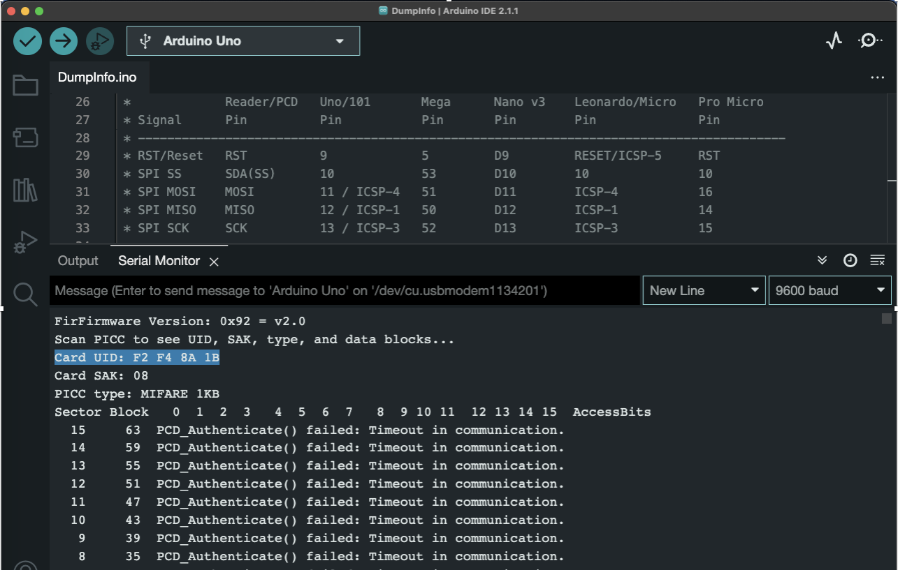 步驟三：將學生證放在RC522上感應，透過觀察serial monitor 我們可以知道我的學生證的UID是 F2 F4 8A 1B
- 現在我們要將這組學生證上的UID寫進水卡裡面 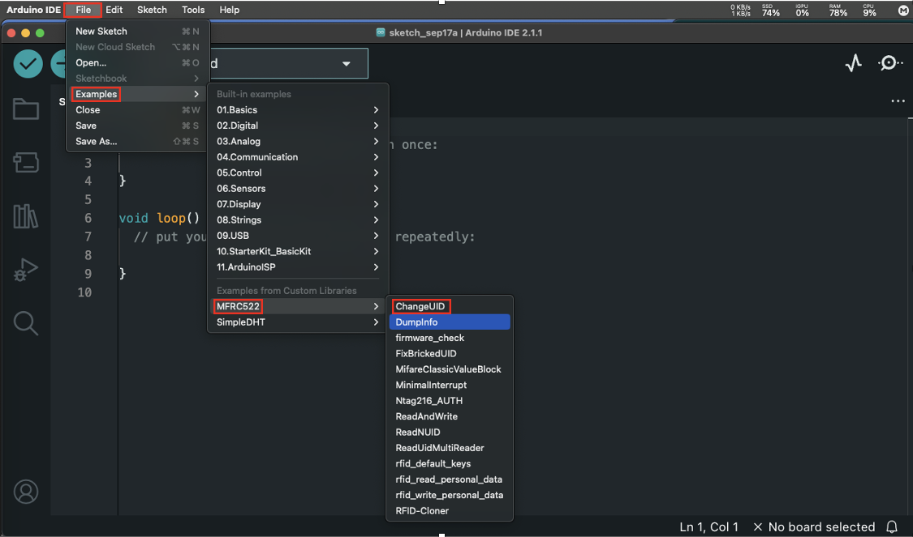 步驟一：依照上圖找到ChangeUID 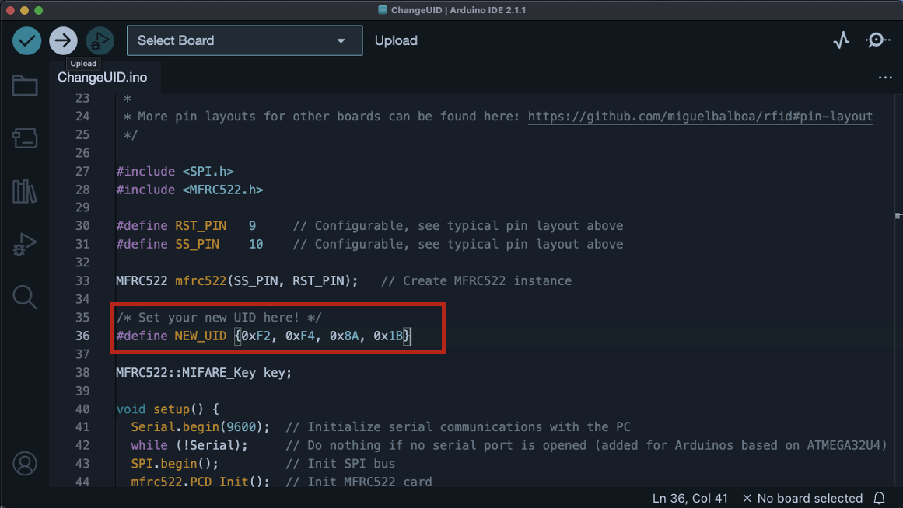 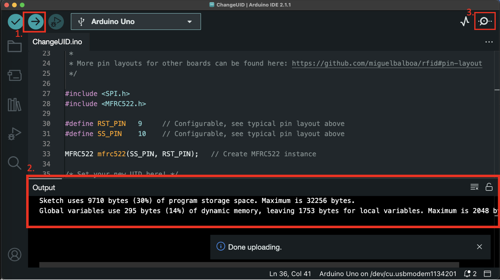 步驟二： 將我們剛才得知的學生證UID輸入到程式碼36行的define，請注意這是16進位的數字，因此前面要加“0x”。 *1.點擊上傳按鈕，將範例程式上傳到開發板上 *2.等待程式碼編譯，若output沒有出現紅色字體的字就表示程式碼是沒有問題的 *3.點擊serial monitor 觀察與開發板的互動 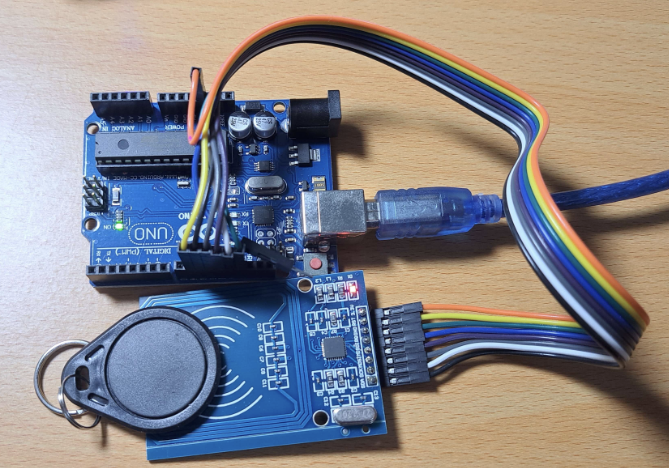 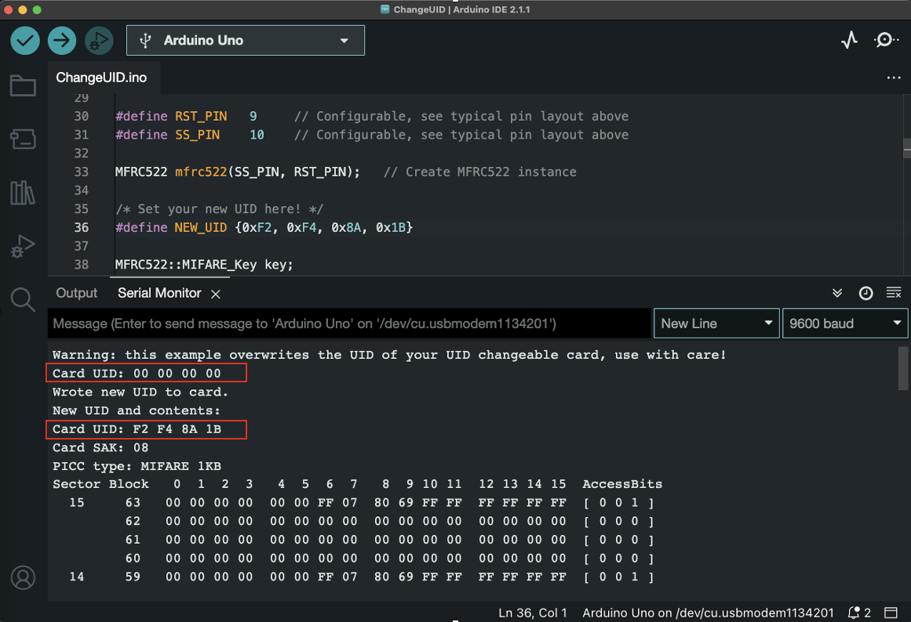 步驟三：將水卡放在RC522上感應，透過觀察serial monitor 我們會發現我們的水卡UID已經變成我們 學生證的UID了
- 最後，你就可以去試試看門禁系統能不能接受這個磁扣了
註：如果沒辦法正確上傳程式碼但是你非常確定你沒有動到程式碼其他的地方， 你可以去確認一下定義的腳位是否正確 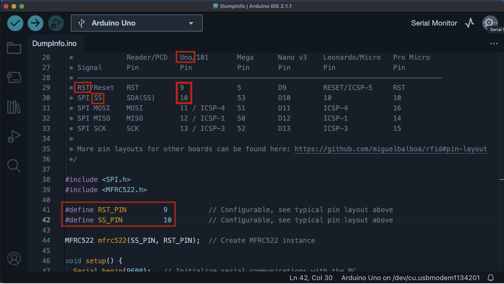 26~33行的註解是告訴使用者不同開發板有不同腳位的定義，如Uno板的 RST 是 9 號腳位；SS 是 10 號腳位。 因此我們要確認程式碼中第41~42行中是否符合上表，若不符合則更正。